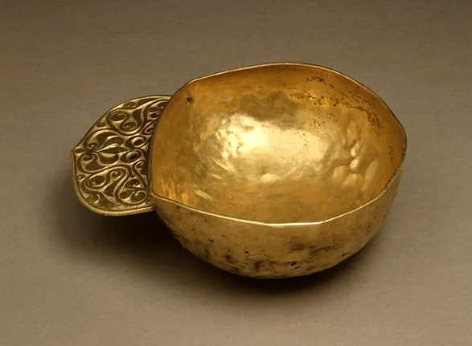
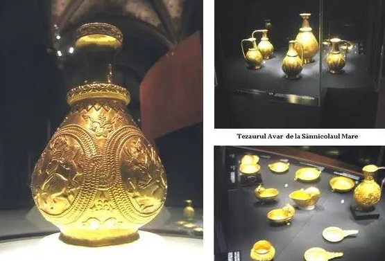
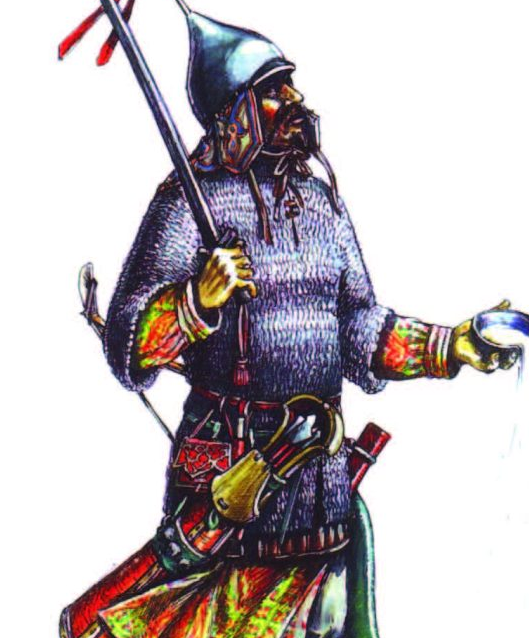

MIGRATORI DIN SPAȚIUL ROMÂNESC
între secolele III-XIII
Goții
Goții au fost un popor germanic răsăritean. În secolele al III-lea și al IV-lea,
au reprezentat o mare problemă pentru Imperiul Roman, începând cu momentul
retragerii lui Aurelian din Dacia. După anul 200 s-au împărțit în vizigoți (goții de vest) și
ostrogoți (goții de est).
Pe la anul 200 ei ajung în stepele din nordul Mării Negre și ocupă în prima jumătate
a secolului III teritoriul dintre Prut și gura Hypanislui cu cetățile Olbia și Tyras,
zonă identificată arheologic cu cultura Sântana de Mureș-Cerneahov.
Unii istorici cred că orașul Goților era situat în fortul abandonat de romani la Pietroasele
în județul Buzău. Au fost descoperite de asemeni locuințe ale nobililor goți similare cu cele
de tip villa ale romanilor, locuințe luxoase decorate cu vitralii de sticlă. O astfel de descoperire
s-a făcut în Republica Moldova.
Unii istorici cred că orașul Goților era situat în fortul abandonat de romani la Pietroasele
în județul Buzău. Au fost descoperite de asemeni locuințe ale nobililor goți similare cu cele
de tip villa ale romanilor, locuințe luxoase decorate cu vitralii de sticlă. O astfel de descoperire
s-a făcut în Republica Moldova.
Împăratul Aurelian (270 - 275), încercând restaurarea granițelor imperiului, face o expediție împotriva
goților
din Dacia, dar, cu toată victoria repurtată asupra lor, în urma căreia ia titlul de "Gothicus maximus" și
"Dacicus maximus",
el nu mai poate restabili ordinea de mai înainte în Dacia. Astfel că, Aurelian încheie pace cu goții,
cedându-le Dacia ca unor
federați ai Imperiului Roman, cu îndatorirea de a păzi limita dunăreană (271).
Așezările goților în Dacia cuprindeau numai câmpia răsăriteană (Moldova cu partea estică a Țării Românești)
Invazia hunică din anul 376 a modificat dominația goților pe Dunărea de Jos. Sub impactul acestei invazii
o mare parte a goților au trecut Dunărea în Imperiu
Pietroasele este satul de reședință al comunei cu același nume din județul Buzău, Muntenia, România. Se află
într-o zonă viticolă cunoscută.
În localitate și în apropierea ei s-au efectuat mai multe descoperiri arheologice,
fiind găsit un castru roman cu terme datând din secolul al IV-lea e.n. și un tezaur gotic datând din aceeași
perioadă.
Tezaurul de la Pietroasa este un tezaur arheologic format din mai multe obiecte din aur, descoperit în anul
1837 care constă în
12 obiecte, cele care sunt și astăzi expuse la Muzeul Național de Istorie a României.
Acestea sunt colanul elipsoidal, colanul cu inscripție runică, colanul simplu, patru fibule, patera cu
figuri mitologice,
două vase poligonale, un vas oenochoe și un taler, în greutate totală de 18,7975 de kilograme de aur și
multe
pietre prețioase ca granate, almandine, turmaline, smaralde, cristale de stâncă, safire și sticlă colorată.
Aceasta este cea mai faimoasă și mai valoroasă grămadă de artefacte antice care
s-a găsit pe teritoriul României. Ea a avut un destin datorat pe de o parte, interesului
pe care i l-a acordat lumea științifică și pe de altă parte, a altor evenimente prin care a
trecut încă din anul 1837 când a fost descoperită și până în anul 1956 când a fost returnată
autorităților române de către U.R.S.S.
Hunii
Hunii au fost un popor nomad de origine turcică, probabil și uralică.
La est de Nistru hunii îi întâlnesc pe ostrogoţii, pe care îi înfrâng.
Vizigoţii conduşi de Atanaric, care locuiau la vest de Nistru, sunt înfrânţi şi ei şi se retrag spre sudul
Moldovei, unde încearcă să reziste, dar nu reuşesc. Această ultimă rezistenţă a goţilor lui Atanaric s-ar fi petrecut în zona Buzăului.
Resturi a acestor goţi înfrânţi de huni au rămas în Dobrogea până pe la anul 850 când încă îşi mai vorbeau limba maternă. O altă parte a lor se refugiaseră
mai înainte din calea hunilor, la sud de Dunăre.
După aceasta, hunii cuprind tot ţinutul din stânga Dunării, unde îşi aşează capitala.
Conduşi de Atila, hunii efectuează mai multe expediţii de jaf împotriva imperiului bizantin şi în Peninsula Balcanică.
În anul 447 Atila atacă Peninsula Balcanică din nou, iar în anul 451, însoţit de trupe gepide şi de goţi,
porneşte o mare expediţie spre Galia şi Italia. Această ultimă expediţie va încheia dominaţia hunilor.
În urma acestor tulburări, gepizii ajung stăpânii Daciei, iar hunii se împrăştie în diferite direcţii.
Un grup se pare că s-a aşezat în vestul Olteniei, alţii în Bulgaria.
Astfel, hunii au ieşit din istorie la fel de repede precum au şi apărut.
Este foarte posibil ca influenţe hune să nu existe asupra populaţiei daco-romane, pentru că dominaţia lor a fost de
scurtă durată, doar vreo optzeci de ani.
În urma acestor tulburări, gepizii ajung stăpânii Daciei.
Gepizii
Gepizii au fost migratori de origine germanică care în secolul al V-lea s-au stabilit în Bazinul Pannonic,
ajungând și în vestul Transilvaniei, Banat și culoarul Oltului. Se presupune că în zona Apahida, în Transilvania, s-a aflat o curte regală gepidă.
Gepizii s-au așezat, în perioada numită Migrația popoarelor în nordul-vestul Daciei postromane.
După invazia hunilor(375 - 453), gepizii, împreună cu ostrogoții, au devenit vasali și mercenari în oastea lui Attila.
După moartea acestuia, gepizii s-au revoltat împotriva foștilor stăpâni și
au luat în stăpânire partea de est a Panoniei (Câmpia Tisei) și vestul Daciei postromane.
Localitățile lor erau concentrate mai ales pe văile râurilor Criș, Mureș, Bega și Timiș,
extinzându-se pe văile Someșului și Arieșului în imediata apropiere a Clujuluide azi, la Apahida,
localitate care pare să fi fost capitală a regatului gepid. Aici a fost descoperită necropola atribuită
căpeteniei princiare gepide creștine Omharus.
În august 2004, la Vlaha, a fost descoperită o necropolă cu 202 morminte datând în secolul al VI-lea d.Hr.
Au fost deshumate piese de ceramică, articole de bronz și o armură. O altă necropolă bogată în rămășițe arheologice a fost
descoperită la Miercurea Sibiului. Alte necropole au fost descoperite la Morești,
județul Mureș, Noșlac, județul Alba, Brateiu, Sibiu, Șeica Mică, județul Sibiu, Timișoara.
La Turda a fost descoperit un mare mormânt gepid si o comoară. Comoara, atribuită unei prințese gepide,
a fost găsită de arheologul Mihai Bărbulescu.
În mormântul de la Turda au fost găsite obiecte care nu se purtau zilnic: cercei, brăţări şi fibule din aur şi argint,
ornate cu pietre semipreţioase, dar şi o oglindă şi un pieptene de os.
Avarii
Avarii au fost un popor migrator provenit din Asia Centrală a cărui limbă era probabil din grupul limbilor turcice. Inițial,
și-au stabilit un hanat pe râul Volga, ulterior în Europa Centrală (Câmpia Panonică)
în Evul Mediu Timpuriu (secolul al VI-lea), fiind timp de două secole o putere militară de temut.
În 557, avarii, învinși în Asia Centrală de alte triburi turce, intră în Europa.
În 567, împreună cu longobarzii, avarii zdrobesc regatul gepizilor.
Teritoriul transilvan devine pentru avarii crescători de animale o regiune preferată în timpul verii.
Limba pe care avarii o vorbeau nu se cunoaşte. În limba turcă "avar" înseamnă vagabond.
Cu populaţia băştinaşă a Daciei nu se cunoaşte ce raporturi au avut, dar este posibil
ca avarii să îşi fi întins stăpânirea până la Munţii Apuseni, pornind din câmpia Tisei.
„Prisăcile” din Transilvania: Prisăcile erau fortificații sumare dispuse pe un aliniament natural ușor de apărat și
întărit prin plantarea de vegetație deasă, șanțuri, întârituri din stâlpi de lemn.
Unii istorici români opinează că prisăcile ar fi fost opera avarilor.
Statul avar a fost distrus de către Carol cel Mare care i-a înfrânt în mai multe lupte, iar în anul 796 le-a cucerit chiar capitala.
Restul poporului avar a fost distrus în luptele duse cu bulgarii conduşi de Krum (804-814) şi a dispărut din istorie.


Slavii
Slavii au fost un popor de origine indo-europeană, care a migrat dinspre răsăritul Europei. Ei căutau pământuri mai bune pentru agricultură și pășunat.
Slavii de răsărit sunt rușii, ucrainenii și bielorușii de astăzi. Slavii de apus sunt cehii, slovacii și polonezii. Iar slavii de sud, cei care au migrat la sudul Dunării, sunt strămoșii bulgarilor, sârbilor, croaților, macedonenilor, slovenilor, bosniacilor și muntenegrenilor.
Slavii au pătruns în regiunile Moldova și Muntenia începând cu sfârșitul secolului al V-lea și în prima jumătate a secolului al VI-lea.
Procesul de slavizare a provinciilor romane de la sud de Dunăre a dus la migrarea populației din zonele fertile
pentru agricultură de la câmpie în zona împădurită de la deal și munte. Aceasta a determinat schimbarea modului de viață,
păstoritul devenind ocupația principală a populației romanice. După ce slavii plecau în căutarea altor teritorii, populația autohtonă revenea
din zonele de refugiu în zonele de proveniență. Au existat, astfel, două populații, una românească și una slavă, care au conviețuit între secolele VIII-X.
În timp ce slavii stabiliți la sud de Dunăre au asimilat celelalte grupuri etnice existente (traci, iliri, celți, sciți), slavii de la nordul Dunării au fost asimilați între secolele VIII-X de daco-romani,
aceasta fiind ultima etapă în finalizarea etnogenezei românești.
Ungurii
O perioadă mai îndelungată au stat în regiunea Volgăi (secolele al VII-lea – al VIII-lea), unde au întâlnit puternicul stat al bulgarilor. O grupare a ungurilor a locuit și în regiunea Bașchiriei care mai târziu a fost numită Magna Hungaria. Au purtat lupte cu pecenegii, uzii, hazarii. În secolul al XIII-lea călugărul Ricardus scria despre unguri: “Sunt păgâni, n-au nicio știință despre Dumnezeu.
Nu se închină la idoli, ci trăiesc ca dobitoacele. Nu cultivă pământul, mănâncă carne de cal,
de lup și de alte de acest fel. Beau lapte și sânge de cal”.
Cronica lui Nestor, Povesti Vremennâh let, redactată în secolul al XI-lea la Kiev, narează cucerirea maghiară: “Ungurii trecură pe lângă Kiev
și au ajuns la Dnipru unde-și întinseră corturile, că erau nomazi ca polovții. Veniți din Răsărit mergeau grăbiți prin munții înalți care s-au numit
ungurești (Carpații nordici) și au luptat cu cei care trăiau acolo, vlahii și sloveanii.
Pe urmă ungurii înlăturară pe vlahi și luară această țară și se așezară cu sloveanii împreună pe care îi supuseseră și de atunci țara se numește Ungaria”.
Între anii 896 și 899 au distrus statul Moraviei Mari (din Slovacia) și au ocupat toată regiunea dintre râul Tisa și Dunăre, în 906. Din 899
au continuat raidurile călăreților maghiari în Europa Centrală. Obiectivele lor erau Germania și Nordul Italiei. Germania, slăbită după dinastia
carolingiană, nu putea face față invaziilor succesive ale ungurilor. Germania de Nord (Saxonia, Turingia, Westfalia) și Sudul Germaniei (Suabia, Bavaria)
au fost devastate și jefuite copios de maghiari. Apogeul invaziilor a fost între 920 și 926 după moartea lui Arpad în 907.
Relațiile maghiarilor, nomazi hrăpăreți, nu a fost de bună vecinătate cu cnezatele și voievodatele românești. Unii, fără muncă,
voiau să-și însușească bunurile celorlalți, care nu voiau să-și lase moșia muncită și apărată din moși strămoși, unor venetici aduși
de vânturile pustiului asiatic.
Românii nu au stat pasivi și au opus rezistență înverșunată invadatorilor.
Transilvania fusese numită în documentele scrise în limba latină, Ultrasilvana până la jumătatea secolului al XII-lea, iar în corespondența papală
cu Ordinul Teutonic din secolul al XIII-lea era numită Terra ultra montes nivium,
Țara de peste munții cu zăpadă (Carpații). Maghiarii o numeau Ardeal/Erdely (pădure, pădurea regelui).
Până în 1075, Ardealul fusese teritoriu de graniță disputat de pecenegi și unguri.
Cucerirea Transilvaniei de către unguri s-a prelungit până către finalul secolului al XII-lea.
Cumanii
Cumanii au fost un popor originar din Asia.
Secolul al IX-lea i-a surprins pe cumani în spațiul geografic dintre fluviile Ural și Volga,
în apropierea pecenegilor. După mutarea (migrarea) pecenegilor spre vest, între Nistru și Carpați,
pe la finele secolului al IX-lea, cumanii au luat locul acestora dintre Don și Nipru. În a doua jumătate a secolului al XI-lea,
după ce resturile hoardelor pecenegilor rămase în urma decimării lor in bătăliile cu Imperiul Bizantin s-au mutat peste Dunăre,
cumanii au luat în stăpânire (1070-75) teritorii ocupate până atunci de românii și pecenegii dintre Nistru și Carpați,
iar resturile pecenegilor s-au contopit cu ei.
Prima atestare a regiunii Țara Făgărașului a fost „Terra Blacorum”, in 1222.
În Evul Mediu, a găzduit pe lângă populația românească și comunități sedentarizate
la sfârșitul secolului al XIII-lea ale unor variate seminții turcice tradițional migratoare cum ar fi cumanii, pecenegii,
și, într-o mai mică măsură, uzii.
Astfel, documentele timpului semnalează existența în anul 1224 a pădurii blazilor și a pecenegilor posibil între Munții Făgăraș și Valea Oltului.
Cumanii și pecenegii par a fi conviețuit în simbioză pașnică cu populatia româna, mulți din ei liberi și posesori de diplome nobiliare în Țara Făgărașului.
În timp, au fost asimilați de populația ungară și română din zonă.
Pecenegii
Pecenegii au fost un popor seminomad originar din stepele Asiei Centrale.
În secolul al IX-lea ei au populat nordul Mării Negre, iar în secolele al XI-lea-al XII-lea au pătruns în Peninsula Balcanică.
Numele pecenegilor derivă din limba turcă veche și înseamnă „cumnați sau clanuri/triburi înrudite".
885 - Pecenegii îi atacă pe unguri și îi împing spre vest.
889 - Pecenegii trec granița hazară și se stabilesc în una dintre patriile temporare ale ungurilor.
894 - Pecenegii, aliați cu bulgarii, îi împing pe unguri din Atelkuzu dincolo de Carpați pe teritoriul Ungariei de astăzi.
903-905 Pecenegii înaintează și ocupă Oltenia și Banatul, iar în Transilvania ocupă zona din apropierea orașului Alba Iulia.
Singura regiune din Transilvania unde există o concentrare masivă de toponime de origine pecenegă se află în sud-est,
în județele Brașov și Covasna. Cel mai important dintre aceste toponime este chiar Brașov. Deși sufixul este slav, ceea ce a condus la presupunerea
că denumirea ar fi slavă, s-a putut demonstra că Brasso, devenit apoi Brașov, provine din termenul turcic Barasu, care înseamnă „apă albă”.

Mongolii
Succesor al lui Ginghis Han, Batu Han a început cucerirea Rusiei, ocupând în scurt timp cnezatele Moscovei, Kievului și Novgorodului.
De la Kiev armata mongolă s-a împărțit în trei grupuri. Cel central a pătruns în Ungaria și, după ce a zdrobit pe malul râului Sajo armata maghiară,
a ajuns până în Dalmația. Grupul sudic după ce a străbătut Moldova și Muntenia, a pătruns în Transilvania.
Marea invazie mongola a afectat si regiunile din țările române,importante atât pentru prada,
cât si pentru faptul ca reprezentau baze de atac spre alte tari. Românii, care nu dispuneau de formatiuni statale consolidate,
de structuri militare bine organizate, de fortificatii corespunzatoare, nu au fost în stare sa le reziste. Din cauza invaziei
care a distrus majoritatea evidențelor culturale de scriitură și limbă când a fost prădată zona în 1241, puține mărturii ale evului mediu
cultural românesc mai există astăzi.
Tătarii au intrat mai întâi în Moldova plecând din zona Halîciului (Galiția). Un corp de oaste a înaintat de-a lungul râului Ceremuș până la Cârlibaba unde s-au împărțit în două coloane: una condusă de hanul Cadan a pornit apoi prin pasul Rotunda spre Rodna iar a doua coloană
(Buri) a pornit spre Maramureș. Cadan a cucerit în continuare Rodna, Bistrița, Clujul și Oradea.
Un alt corp de oaste condus de Calcan a intrat în Moldova și a ajuns la trecătoarea Oituz unde s-a luptat cu românii și secuii și a cucerit apoi Tușnad,
Odorhei, Cetatea de Baltă, Blaj și Alba Iulia.
Un alt corp de oaste, condus de Bugec, a înaintat de-a lungul Siretului și a distrus biserica fortificată a cumanilor de pe Milcov.
În continuare Bugec a cucerit zona Buzăului și a intrat pe valea Buzăului (drumul tătarului) spre Brașov. S-a întâlnit la Târgu Secuiesc cu Calcan
și apoi a luat drumul Făgărașului, intrând (probabil pe valea Oltului) în teritoriul lui Seneslau până la Turnu Severin.
În continuare Budjek a intrat în Banat de-a lungul râului Cerna, atacând și cucerind Cenadul și în final Timișoara.
Tătarii
Tătarii au fost o populaţie nomadă originară din Mongolia.
Erau foarte buni călăreţi şi arcaşi, ca multe alte neamuri nomade. Pe lângă arcuri şi săgeţi ei mai aveau şi lănci şi săbii,
dar pe acestea din urmă le foloseau mai rar,
pentru că în general evitau lupta din apropiere, preferând să atace prin surprindere şi să dispară fulgerător.
În anul 1241 tătarii lansează o mare invazie a Europei şi ajung şi pe teritoriul ţării noastre. Aici, ca şi peste tot pe unde au trecut, tătarii au distrus, au jefuit şi au ucis populaţia, trecând mai departe spre inima Europei. Deşi conducătorii locali şi populaţia a încercat să se împotrivească tătarilor şi pe teritoriul actualei Românii, ei au fost distruşi rapid de către tătari, care aveau chiar şi posibilitatea de a purta scurte asedii asupra oraşelor
fortificate întâlnite în drumul lor de pradă.
Astfel, sunt distruse principalele oraşe din ţară, iar populaţia măcelărită.
De foarte multe ori tătarii sunt confundaţi cu mongolii. Practic, când se vorbeşte despre marea invazie mongolă din 1241,
etnonimele tătar şi mongol sunt considerate, de mulţi, unul sau acelaşi lucru, adică descriind una şi aceeaşi populaţie. În realitate,
lucrurile stau puţin diferit. Într-adevăr în secolul al XIII lea la marea invazie îndreptată împotriva Europei de Genghis Han şi urmaşii
săi au participat atât mongoli, cât şi tătari. Între ei erau asemănări mari la nivel cultural, militar şi social, însă aceste neamuri erau diferite.
Dacă originea mongolilor este clară, când vine vorba de tătari, părerile specialiştilor au fost împărţite. Pentru unii, tătarii ar avea origine mongolă
şi ar fi fost o uniune de triburi, din marile stepe ale Asiei Centrale, care a fost cooptată de Genghis Han în marile lui campanii.
„Înfăţişarea tătarilor este îngrozitoare. Ei au membrele scurte şi trunchiurile mari, faţa e lată, sunt spâni.
Au ochi mici şi îndepărtaţi unul de altul. Dispreţuiesc hrana cu pâine, se hrănesc cu cărnuri atât proaspete, cât şi putrede,
ca băutură amestecă lapte închegat cu sânge de cal. Nici apa cea mai repede nu-i poate opri: ei o trec înot călare. Se slujesc de corturi
făcute din pânză sau piei”, scria arhidiaconul Toma din Spalato.
Tătarii au fost esenţiali pentru deschiderea rutelor Orient-Occident pe uscat. De altfel, o dată cu noile realităţi sociale şi politice ale
hanatului, tătarii au început, pe lângă tradiţionala creştere a animalelor, să fie buni artizani în metal, dar şi agricultori. Tătarii aveau şi
pieţe renumite de sclavi, făcând comerţ intens cu italienii pe ţărmurile Mării Negre. De altfel, aceştia au ajuns să se convertească la islam,
dar şi să vorbească limba otomanilor, ca limbă curentă în comerţ şi politică. În anul 1783, puterea tătarilor decade odată cu cea a Imperiului Otoman,
iar hanatul Crimeei este cucerit şi anexat Imperiului Rus de Ecaterina cea Mare.
Tătarii au continuat să vieţuiască în număr mare pe teritoriul Rusiei, dar şi al României, în Dobrogea mai ales păstrându-şi tradiţiile.
Tătarii, un grup etnic vorbitor de limba tătară, sunt prezenți pe teritoriul actual al României din secolul al XIII-lea.
Conform recensământului din 2011, 19.006 de oameni s-au declarat tătari, majoritatea acestora fiind tătari crimeeni din județul Constanța.
Tătarii sunt principalii reprezentați ai islamului în România. (Wikipedia)
Țara Românească a existat între secolele al XIV-lea și secolul al XIX-lea timp de mai bine de 500 de ani, ea începându-și existența ca stat independent
odată cu Bătălia de la Posada în jur de 10 noiembrie 1330, și încheindu-și existența ca stat (devenit autonom dar tributar Imperiului Otoman).
Bibliografie
Wikipedia
https://enciclopediaromaniei.ro/wiki/Huni
https://www.independentaromana.ro/popoarele-migratoare-pe-teritoriul-romaniei-hunii/
https://hartacomorii.blogspot.com/2014/07/comoara-printesei-gepide-de-la-turda.html
https://inturda.ro/2014/02/24/franziska-muzeu-istorie-turda/
https://enciclopediaromaniei.ro/wiki/Avari
https://www.descopera.ro/cultura/11760920-avarii-cine-sunt-ei-si-cum-ne-au-influentat-istoria
https://politeia.org.ro/magazin-istoric/barbarii-7-avarii/10529/
https://www.independentaromana.ro/popoarele-migratoare-pe-teritoriul-romaniei-slavii/
https://ro.historylapse.org/migratorii-slavi-etnogeneza-romaneasca
https://www.independentaromana.ro/popoare-migratoare-pe-teritoriul-romaniei-ungurii/
https://enciclopediaromaniei.ro/wiki/Cumani
https://www.independentaromana.ro/cumanii-popoare-migratoare-pe-teritoriul-romaniei/
https://historia.ro/sectiune/general/romani-pecenegi-cumani-si-mongoli-sec-xi-xiv-569898.html
http://enciclopediaromaniei.ro/wiki/T%C4%83tari
https://adevarul.ro/stiri-locale/botosani/care-a-fost-originea-tatarilor-razboinicii-au-2019126.html